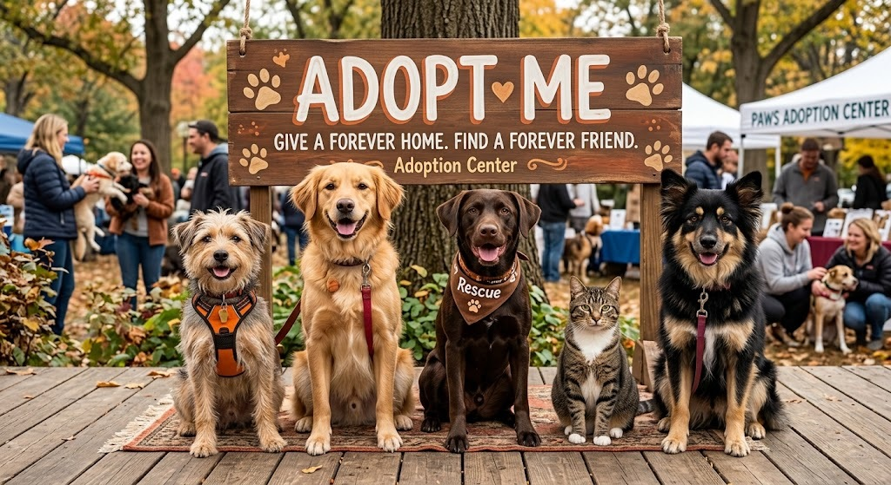
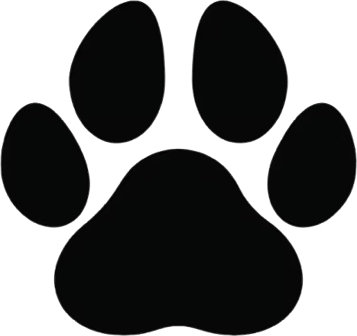

generated with gemini" width = "600" height = "300">Adopting a pet gives a deserving animal a second chance while completely transforming your life. Beyond the joy of saving a life and creating space in shelters for other animals in need, rescue pets offer incredible benefits: they lower stress, boost your physical health through active play, and combat loneliness with pure, unconditional loyalty. When you adopt, you don't just gain a faithful companion—you gain a lifetime of gratitude and unconditional love.
|
 Step 1 |
Step 2 Submit an Application |
Step 3 Meet and Adopt |